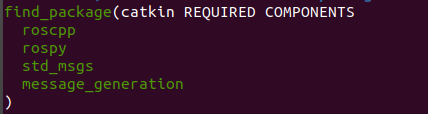

Сообщения
Сообщения
Ссылки: Из книги братьев Вольт
Ноды отправляют и принимают данные между собой, согласно заданного формата. Эти данные называют Сообщения, а описание Типом Сообщения.
Сообщения описываются в файлах .msg как пары значений: тип поля и имя поля:
fieldtype fieldname
fieldtype1 fieldname1
Сообщения могут быть как простых типов (integer, float, boolean), так и могут состоять из сложных структур, содержащих вложенные сообщения и массивы сообщений.
Например для сообщения с координатами обьекта (XYZ) есть существующий тип сообщения geometry_msgs/Point.msg который описывается:
float64 x
float64 y
float64 z
Некоторые команды:
Просмотр определения типа сообщения: rosmsg show type
Знакомство с файлами msg
msg-файлы - это простые текстовые файлы, которые описывают поля сообщений ROS. Они используются для создания исходного кода сообщений на разных языках. Они хранятся в папке msg каталога пакета. Представляют собой просто текстовые файлы с типом поля и названием поля в каждой строке.
Тип поля:
- int8, int16, int32, int64 (plus uint*)
- float32, float64
- string
- time, duration
- other msg files
- variable-length array[] and fixed-length array[C]
Существует также тип Header. Header содержит временную метку и информацию о координатной системе, которые обычно используются в ROS. Вы часто увидите, что в первой строке msg-файла есть заголовок Header.
Пример создания файла.msg (Num.msg):
- Переходим в каталог пакета (roscd или просто cd)
Создаём внутри пакета каталог msg: mkdir msg
Что-то записываем в создаваемый файл, например: echo "int64 num" > msg/Num.msg
-
Далее нужно убедиться, что msg-файлы преобразованы в исходный код для C++, Python и других языков. Для этого открыть package.xml и убедитесь, что эти две строки есть в нем и не закомментированы:

Были закомментированы, исправил.
-
Редактирование CMakeLists.txt
- Во время сборки нужен "message_generation", в время выполнения "message_runtime"
- Далее открыть CMakeLists.txt В нем в функцию find_package добавить message_generation, тем самым можем генерировать сообщения.
Добавил.

Вы можете заметить, что иногда ваш проект собирается нормально, даже если вы не вызывали find_package со всеми зависимостями. Это связано с тем, что catkin объединяет все ваши проекты в один, поэтому, если более ранний проект вызывает find_package, ваш более поздний настроен с теми же значениями. Но если вы забудете о вызове, это означает, что ваш проект может легко прерваться при изолированной сборке.
- Также убедитесь, что вы экспортировали зависимость от среды выполнения сообщений:

Добавил.
- Исправил блок:

- Теперь мы должны убедиться, что функция generate_messages() вызвана (раскомментировал блок):

Теперь вы готовы сгенерировать исходные файлы из вашего определения msg.
Создание новых сообщений (из книги братьев Вольт)
В процессе разработки часто возникает необходимость создавать собственные типы сообщений с уникальной структурой данных. Файлы с описанием сообщений необходимо хранить в директории ./msg При этом имя файла определяет название типа созданного сообщения.
Например, мы хотим использовать данные с датчика давления и температуры BMP180. Мы предполагаем, что нам понадобится передавать два значения: давление и температура (стандартные параметры для барометрических датчиков).
Создадим файл ./msg/Barometer.msg
uint16 pressure
float32 temperature
Для правильного подключения созданных .msg файлов необходимо удостовериться, что установлены все зависимости и внесены изменения в конфигурацию пакета:
- . Файл package.xml должен содержать следующие строчки:
message_generation
message_generation
- . Файл CMakeLists.txt должен содержать следующие изменения для подключения процесса обработки сообщений:
find_package(catkin REQUIRED COMPONENTS
roscpp
rospy
std_msgs
message_generation)
catkin_package(
CATKIN_DEPENDS
message_generation
roscpp
rospy
std_msgs
)
## Generate messages in the 'msg' folder
add_message_files(
FILES
Barometer.msg
)
generate_messages(
DEPENDENCIES
std_msgs
)
После этого необходимо запустить процесс сборки пакета командой catkin_make:
cd ~/catkin_ws && catkin_make
Проверить правильность создания нового типа сообщений Barometer.msg в пакет можно выполнить поиском по названию сообщения:
rosmsg list | grep Baro
Подключить .msg файл в python:
import rospy
from ros_book_samples.msg import Barometer
После изменения файла .msg всегда необходимо "пересобирать" проект через вызов catkin_make. Файлы .msg не используются напрямую, а служат инструкцией для генерации вспомогательных файлов, которые подключаются после их вызова. Например из файла Barometer.msg создается файл для python devel/lib/python2.7/dist-packages/ros\_book\_samples/msg/\_Barometer.py.
Консольная утилита rosmsg
rosmsg это удобный инструмент командной строки, который предоставляют справочную информацию для разработчиков, а также служит мощным средством анализа для получения дополнительной информации о данных, передаваемых в ROS.
Например, если вы используете сообщение в своем коде, вы можете выполнить rosmsg show в командной строке для получения списка полей используемых в сообщении:
rosmsg show [message type]
message type состоит из имени пакета, где определён файл сообщения и файла.msg

Если не помним название пакета, то можно без него показать тип сообщения:

Команды консольной утилиты rosmsg:
- rosmsg show Показать информацию о сообщении
- rosmsg info Алиас для команды rosmsg show
- rosmsg list Вывести все существующие типы сообщений
- rosmsg md5 Отобразить md5sum сообщения
- rosmsg package Список всех сообщений в пакете
- rosmsg packages Список пакетов, использующих сообщение